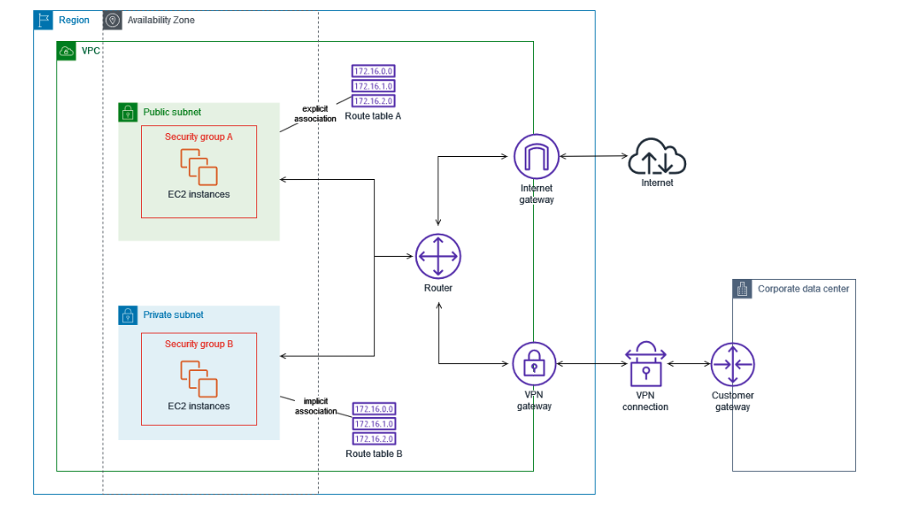

3.3. ルートテーブル¶
3.3.1. VPC内の通信¶
VPC内の通信経路はサブネットごとに紐づけられたルートテーブルにより制御される。
3.3.2. ルートテーブル¶
ルートテーブルでは、送信先(IP範囲)とそれに対するターゲットを定義する。
VPC内の通信は、ルートテーブルに問い合わせを行い、定義されたルートに従って通信を誘導する。

3.3.2.1. localの通信¶
デフォルトのルートテーブルでは、VPC内でのルーティングを有効にするローカルルートが定義されている。 例えば、VPCのCIDRが(10.0.0.0/16)の場合、以下のような定義がされている。 以下の定義により、VPC内の通信経路が確立される（きちんと通信するためにはセキュリティ設定も必要）
送信先IP |
ターゲット |
|---|---|
10.0.0.0/16 |
local |
3.3.2.2. ターゲットの例¶
ターゲットの例としては以下が挙げられる
利用例 |
送信先IP |
ターゲット |
備考 |
|---|---|---|---|
インターネットへの通信 |
0.0.0.0/0 |
igw-xxxxxx |
パブリックサブネットで指定 |
NATGW経由の通信 |
0.0.0.0/0 |
nat-xxxxxx |
プライベートサブネットで指定 |
VPCエンドポイント設定 |
pl-xxxxxx |
vpce-xxxxx |
plとはprefix Listを意味し、特定のAWSサービスに関連するIPプレフィックスを集約したもの。実態はCIDRの集合 |
仮想GW経由のオンプレへのVPN接続 |
192.168.1.0/24 |
vgw-xxxxx |
仮想GWを経由して、オンプレへ通信する |
他のVPCへのピア接続 |
10.1.0.0/16 |
pcx-xxxxx |
VPCのピア接続を経由して、別のVPCのlocalへ通信する |
3.3.2.3. ロンゲストマッチ¶
ルートテーブルには、複数のルールを設定する事ができるが、ルールが重複している場合より詳細なルールを設定しているルールが適用される。 例えば、以下の例で10.0.1.4への通信を行うと３番の経路で通信が行われる。
No. |
送信先IP |
宛先 |
|---|---|---|
1 |
10.0.0.0/16 |
local |
2 |
0.0.0.0/0 |
igw |
3 |
10.0.1.0/24 |
pcx |
3.3.2.4. メインルートテーブルとカスタムルートテーブル¶
VPC作成時に、自動的にメインルートテーブルが作成され、 メインルートテーブルは明示的にルートテーブルの紐付けが行われないサブネットに対して付与され、ローカルルートのみが定義されている。
サブネットごとにルートを設定する場合は、通信経路を設定した新たなルートテーブルを作成し、サブネットに紐づける。明示的に作成され、紐付けが行われたルートテーブルをカスタムルートテーブルと呼ぶ。